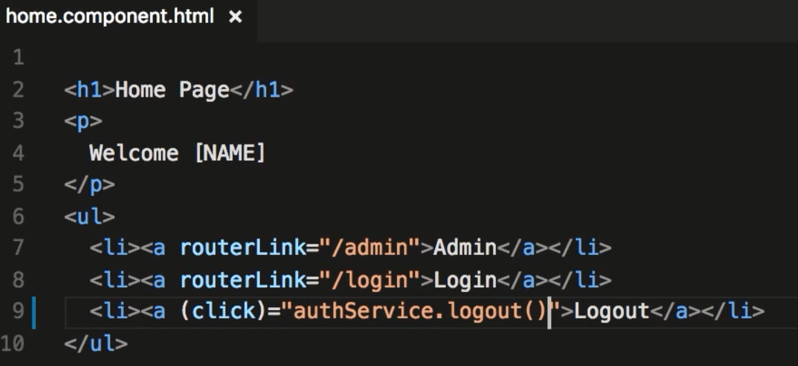
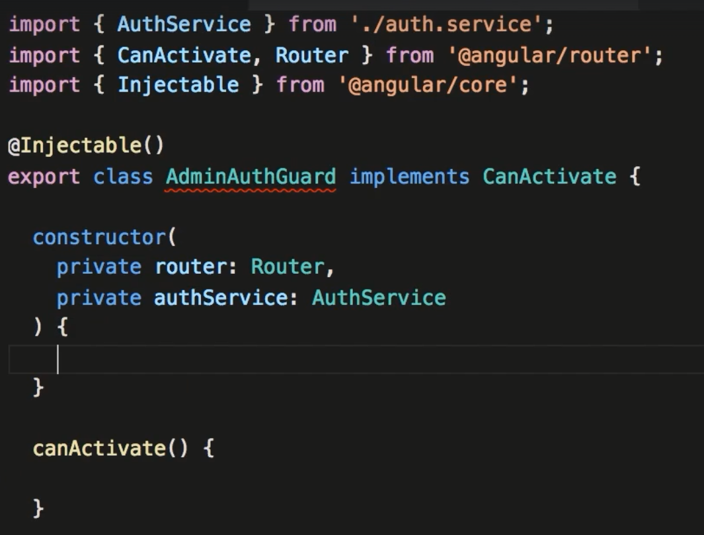

Section 11. Authentication and Authorization
140. Architecture
- Talked about the client server relationship. Dealing with JWT, how in the token you have information such as name, id etc.
- Mentioned that a token is usually included in http requests (probably in the header)
141. JSON Web Tokens
- Explaining how JWT works. 3 sections, header, payload , digital signature. Hackers cannon modify the payload without the signature changing.
- Part of the nodejs course.
142. Starter Code
- Describes how, if you are coding along, to create a fake http service. Not going to use, will attempt to use api created in node course.
143. Implementation Login
- Describes the flow from the form to the backend service making the request. First image is the html form submitting the form values
- This second is our component with the signIn method. Here it takes the creds' from the form and sends the request via the authService.login method.
- It is looking for a true or false response and will route based on that result.
- The 3rd image here is our login method that makes a call to our backend API and authenticates. Since this is an observable we subscribe to the result.
- If there is a result and a token then we store that token in localStorage and return true, otherwise we did not authenticate and we return false.
144. Implementation Logout
- Logging out does not require any communication with the back end servers. You simply need to delete the token in your web storage.

145. Showing or Hiding Elements
- In order to read jwt tokens in your app you need to install the package: angular2-jwt (import JwtHelper)
- Below shows you to use some of the methods of JwtHelper.
- Instead of implementing as above you can simply below:
- Below shows how to display links based on if isLoggedIn.
146. Showing or Hiding elements based on the User's Role
- Below shows how to decode the token and return to the user
- Below tests if the user is logged in AND the admin property is true.
147. Gettig the Current User
- To get the current user you use the decoded token and with interpolation display the user (if the user is logged in)
148. CanActivate Interface
- The above implementation does not prevent a user from going directly to the admin url. You need Angular to decide if this link is Activated.
This is where the CanActivate method comes in. To implement generate a new service (ie: auth-guard.service.ts)
- In this example we implement CanActivate. This requires a canActivate method.
- After creating the authGuard you protect routes in the RouteModule in app.module.ts. You also have to add the authGuard to the providers array.
149. Redirecting Users after Logging In
- This topic deals with redirecting a user back to where they were after they get re-logged in. I can only think of if you
were on a page and your session expired you couldn't refresh or continue until you re-logged in (you are directed to login if you expire)
Once you re-log in this topic deals with returning to where the client left off.
- (missing part below: state.url

150. Protecting Routes Based on the Users Role
- Create a new service that acts as the adminAuthguard. You then and to the authguard array for the route.

151. Accessing Protected API Resources
- Deals with sending authorization in the header.
- There is a library that you can use that will simplify the above. ** mistake below... the path is wrong for angularjwt
- Apparently the authHttp is smart enough to pull the token out of localStorage....we'll see.
- If you need to connect to endpoints that don't have authorization you can construct 2 var's and use the appropriate one.
- Below shows constructing both end points.
152. Quick Recap